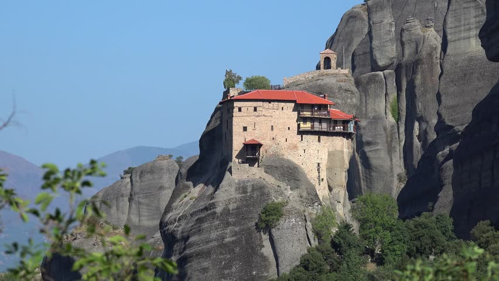
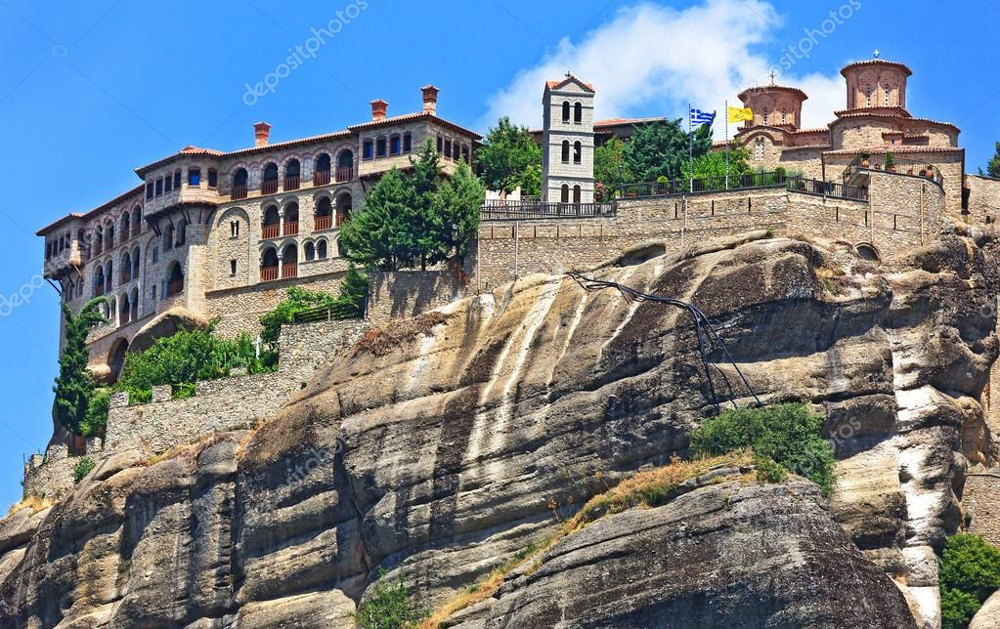

Meteora monasteries – the miracle of Greece.Few kilometers northwest of the town of Kalabaka, the impressive rocks of Meteora are rising from the plains of Thessaly been one of the most amazing places in Greece. Many centuries ago, on these gigantic rocks with the breathtaking landscape reaching heights of more than 600 meters, it was formed one of the most important monastic communities of Greece. The Greek word Meteora means “suspended in the air” and this phrase aptly describes these remarkable Greek Orthodox monasteries. Meteora is a great place to experience , a spectacular landscape and byzantine monasteries perched on top of steep rocks that house priceless artifacts and wall paintings. Today only six monasteries are active with a small number of monks or nuns who reside on Meteora. In 1988, the Meteora monasteries have been included in the UNESCO World Heritage List and the Meteora-Antichassia area is part of the Natura 2000 network hosting some rare species of birds and flowers.As you approach the town of Kalabaka, the nearest big town near Meteora , and the picturesque village of Kastraki you will see a complex of giant sandstone rock pillars that climb up into the sky. On top of them you will spot the famous Meteora monasteries.
 The beginning of the monastic life on the rock of Anapafsas is placed in the 14th century and the name of the monastery probably due to old founder. In this phase belongs the chapel of St. Anthony, the walls of which still exists the remains of frescoes. The monastery was renovated in the first decade of the 16th century. When Larissa Metropolitan St. Dionysius the Merciful and the Exarch Stagon monk Nikanor, who are the founders of the monastery, erected the present church, which was painted by the famous Cretan painter Theophanes Strelitzas in 1527. From the first decade of the 20th century. The monastery was abandoned and began to decay. In the 1960s, he renovated and restored by the Archaeological Service. The construction and installation of the monastery (tall rectangular building with successive levels) adapted to the capabilities of the very small area of the plateau of the rock in which it was built. Going up the first staircase that was built you see the small chapel of St. Anthony and the crypt, where previously stored codes and heirlooms. On the walls of the chapel remains frescoes of the 14th century. On the next floor is built the church of the monastery, a small single room, almost square space preceded by a large enough in relation to the church narthex (lite). Upstairs are the old bank of the monastery, which was restored and today serves as the official residence (hostel), the ossuary and the renovated, since 1971, church of St. John the Baptist. The frescoes decorating the little church of the monastery are considered among the most important sets of post-Byzantine painting, as it is the oldest known signed work of Theophanes. In the inscription above the entrance leading from the narthex to the nave preserved the signature of the artist “hand of the monk Theophanes of Crete Strelitzas. On vertical surfaces of the stent dominate large-figured compositions. On the north wall of the narthex placed the imposing representation of the Second Coming, while the west wall illustrated the Dormition of Efraim the Syrian and rare depiction of Adam giving names to the animals. In the two other walls in the lower zone represented full-length saints and saints among whom the donors stand, Dionysius Larissa Metropolitan and Exarch Stagon Nicanor next to Virgin Mary and St. Athanasius the Meteorite. In the upper zone depicted the Assumption of St. Nicholas and scenes from the miracles of Christ. In the main temple at the top of the dome dominates the Almighty, below illustrates the liturgy and the Prophets and the spherical triangles depicts the four Evangelists. On the walls of the nave are depicted in the lower zone full length saints, little higher saints in stitharia and in the upper zone of the Twelve scenes from the life, passions and Resurrection of Christ. Given the large number of scenes that make up the iconography of the Catholic, whose surfaces murals were limited, many of these scenes are the size of a handheld image. Theofanis manages to introduce in the decoration of the Catholic Anapafsas except iconography sophisticated technique and style that characterizes the artistic production of portable icons of the Cretan School.
The Great Meteoron, also known as the Holy Monastery of the250tamorfossis (Transfiguration of Christ), is a male monastery and is the oldest and largest of all the monasteries of Meteora. It is built on the greatest rock of the complex, the Platys Lithos or Playtlithos. It was founded little before the mid-14th century (around 1340) by a scholar monk of Mount Athos, Saint Athanasios Meteorites. The monastery has a pleasant courtyard and there are many amazing frescoes to see.
The Great Meteoron through endless adventures and persecutions during the last six centuries continued uninterruptedly its monastic presence and radiance and kept an important part of its treasures and its priceless national and religious heirlooms. At the sanctum of the catholic there are important frescos of the Macedonian school and the remarkable frescos of the main church and the narthex are believed to be created by Georgie, student of Theophanous the Cretan. At the above Holy Monastery are the chapels of the Mother of God (Virgin Mary of the Meteorite Stone), of Holy Baptist, of Saint Equal Apostles Constantine and Helen and of Saint Nektarios (more modern). The most important buildings are the centre (kitchen), the old age home, the “trapeza”(dining hall) and others.
Probably one of the most interesting parts of the monastery is the sacristy which contain shelves of the skulls of the monks who have lived there over the years. Great Meteoron monastery serves as the main museum for visitors to Meteora.It remains a true bastion of orthodox monasticism, a real bulwark of Christianity and a holy ark of our national and religious tradition.
| Monday | Tuesday | Wednessday | Thursday | Friday | Saturday | Sunday |
|---|---|---|---|---|---|---|
| open | close | open | open | open | open | open |